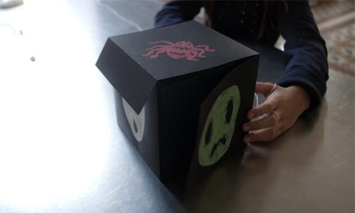

Una caja con una súper sorpresa de Halloween. Gracias Josefa!
A box with a super Halloween surprise. Thank you Josefa!
Eine Box mit einer super Halloween -Überraschung. Danke Josefa!


Una caja con una súper sorpresa de Halloween. Gracias Josefa!
A box with a super Halloween surprise. Thank you Josefa!
Eine Box mit einer super Halloween -Überraschung. Danke Josefa!

De alambre hemos hecho un mango para un bote de cristal y con papel crepé negro hemos hecho un murciélago.Terminada tenemos una pequeña farolita para Halloween.…
Leer más →
Noah y Hannah en Halloween del año pasado. Noah and Hannah in Halloween last year. Noah und Hannah zu Halloween letztes Jahr.
Leer más →
Estos son rollos de papel higiénico pintado en negro con las piernas hechas de limpiapipas. Debido a sus pies flexibles estos pequeños murciélagos pueden colgarse por…
Leer más →
Ya veo en el internet, que la gente esta preparando Halloween, por lo menos buscan ideas. Aquí es el disfraz de una niñas pequeña de la…
Leer más →
Salchicha con almendra. Sausage with almond. Wurst mit Mandel.
Leer más →
Gelatina con gusanos de chuche. Que rico! Jelly with candy worm. Jummi! Wackelpeter mit einem Gummiwurm. Lecker!
Leer más →